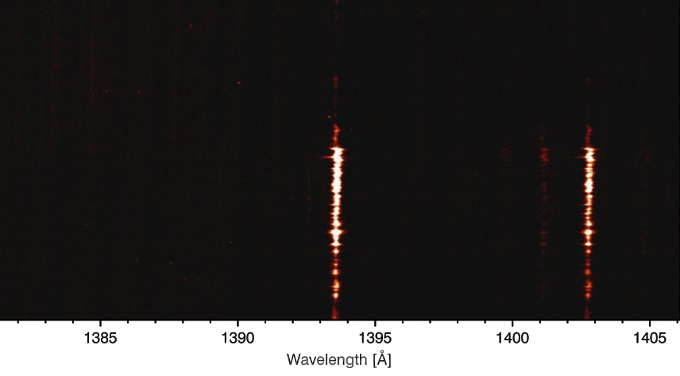

2. Exercise questions¶
The following list of questions is a test of your knowledge of IRIS.
2.1. IRIS and data¶
2.1.1. What is the recommended IRIS data level for new users?¶
- Level 0 data
- Level 1 data
- Level 2 data
- Level 3 data
2.1.2. Which of the following statements is TRUE?¶
- Level 2 data is level 1.5 data with cosmic rays removed
- For SJIs there is no level 3 data
- For spectral rasters, level 3 data cubes have a maximum of three dimensions
- Level 1 data are flat-fielded and dark-subtracted
2.1.3. Were there limb observations on the 1st of March 2014?¶
2.1.4. Which of the following statements is TRUE?¶
- It is possible to observe simultaneously in the FUV and NUV slit-jaws
- The planning for IRIS observations takes place once per week
- IRIS level 1 data is only available from the University of Oslo
- The eclipse season of IRIS is from November to February
2.1.5. When observing a very large sit and stare with a 10s cadence and exposing the full detectors, how long can you observe until the spacecraft memory fills up (assume it was empty)?¶
2.1.6. Which of the following statements is FALSE?¶
- Observing with a roll angle other than 0 can decrease the telemetry rate
- The strongest line in the FUV 1 window is the Si IV 139 nm line
- The step size of a dense raster is about 0.35 arcsec
- The 283.2 nm slit-jaw image is formed in the chromosphere
2.1.7. Which of the following statements is TRUE?¶
- The average data upload rate of IRIS is 0.7 Mbit/s
- IRIS has a geosynchronous orbit
- The IRIS motors allow it to safely point anywhere in the Sun in just a few seconds
- IRIS gets colder when orbiting over Greenland, and this shifts the spectral lines
2.1.8. To coordinate observations with IRIS when must one let the planner know the targets?¶
- One hour before the observations
- A week before the observations
- By 09:00 Pacific Time the day before
- By 00:00 UT the day before
2.2. IRIS spectral lines¶
2.2.1. What is the approximate temperature coverage of the spectral lines observed by IRIS?¶
- 10,000 K to 20,000 K
- 5,000 K to 50,000 K
- 4,500 K to 10,000,000 K
- 10,000 K to 500,000 K
2.2.2. Which of the following statements is FALSE?¶
- The IRIS 279.6 nm SJI is the best channel to align with the AIA coronal channels (17.1, 9.3, 21.1 nm, etc.)
- The IRIS 140.0 nm SJI is the best channel to align with the AIA 170.0 nm channel
- The IRIS 283.2 nm SJI is the best channel to align with the HMI continuum image
- The WCS keywords in the IRIS file headers are obtained by cross correlation of the slit-jaw images with AIA
2.2.3. Which of these lines is formed in higher temperatures?¶

2.2.4. Which of the following statements is TRUE?¶
- The spectral lines in the NUV window provide velocity diagnostics for several heights from the photosphere to the mid chromosphere
- The spectral lines in the FUV 1 window provide temperature diagnostics for several heights from the convective zone to the photosphere
- The C II lines at 133.5 nm have a higher signal to noise ratio than the Mg II h and k lines
- The Fe XII line is observed only in the quiet sun
2.2.5. Which of the following statements is FALSE?¶
- In the umbra of sunspots and very strong active region plage, the Mg II k & h lines have a nearly Gaussian shape
- The Mg II h & k lines have an accompanying triplet of lines at 279.16, 279.87, and 279.88 nm
- In the average quiet sun the Mg II k2r peak is stronger than the k2v peak
- The Mg II k line is stronger than the h line and therefore it is formed in higher layers
2.3. CRISPEX¶
2.3.1. What data formats cannot be used with CRISPEX?¶
- La Palma cube format
- IRIS level 3 FITS files
- Any FITS file
2.3.2. Which of the following statements is TRUE?¶
- The im files contain the images, while the sp files contain the spectra
- The sp files are a transposed version of the im files for faster reading
- The im files contain Stokes I, while the sp files contain Stokes U, Q, V
- The sp files must always be used, while the im files are optional
2.3.3. Which of the following statements is FALSE?¶
- CRISPEX uses the WCS keywords in the IRIS files to calculate the solar (x, y) coordinates
- With IRIS files CRISPEX loads the first timestep into memory to calculate scaling factors
- The y scale of the detailed spectrum window can be adjusted in the Displays tab
- The maximum animation speed is 10 frames per second